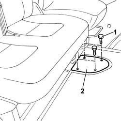
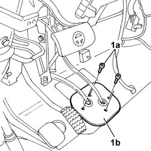
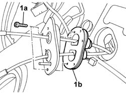
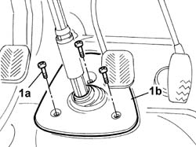
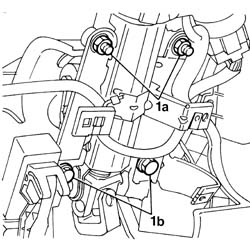
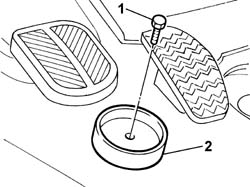
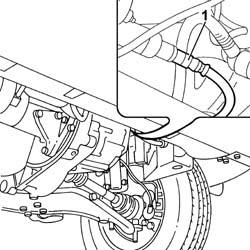
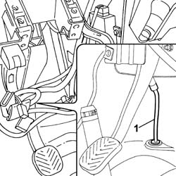
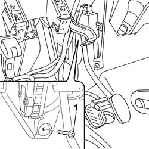

7040L17 PASSENGER COMPARTMENT FLOOR FRONT CARPET - R R
- Path
- Procedures > 70 FITTINGS > 7040 BODY INTERIOR FITTINGS AND TRIM > 7040L CABIN FLOOR COVERING > 7040L17 PASSENGER COMPARTMENT FLOOR FRONT CARPET - R R
- Kind
- repair procedure (removal / refitting; the operation number is the code)
- Applies to
- all engines; all production periods
- Interactive page
- https://sloeber94.github.io/elrnDB-fDct/en/#/244001526
Applies to: all engines; all production periods
 Removing
Removing
 Refitting
Refitting- Remove the bleed valve protective cap on one of the front brake calipers.
- Connect the recovery device (pipe and reservoir) to the brake caliper bleed valve.
- Operate the brake pedal until the brake/clutch reservoir is drained.
Op. 7055B54 UNDER-ENGINE GUARD - R R
Op. 0010T84 COOLANT FOR AIR CONDITIONING SYSTEM DEHYDRATE AND RECHARGE
Op. 0010T20 COOLANT CHECK DENSITY AND TOP UP IF NECESSARY
- Disconnect the negative battery terminal.
Op. 5580C18 AIR BAG MODULE - R+R
Op. 4110A10 STEERING WHEEL - R+R FOR REPLACEMENT OR CHECKS
Op. 7040A26 STEERING COLUMN TRIM - R+R
Op. 7040A23 FRAME OF INSTRUMENT PANEL ON FACIA - R R
Op. 7040A18 GLOVE COMPARTMENT ON FACIA - ARRANGE
Op. 7040A19 CUSHION PADDING - R R
Op. 7040A20 LEFT DASHBOARD LOWER TRIM - R.R.
Op. 7040A07 UPPER COMPARTMENT ON FACIA - R R
Op. 7040A78 RADIO COMPARTMENT BOX R R
Op. 7040A72 UPPER CENTRAL DOCUMENT HOLDER ON DASHBOARD - R.R .
Op. 7065C10 AIR CONDITIONING CONTROL PANEL - R+R
Op. 7065C53 ASHTRAY COMPARTMENT FLAP-R R
Op. 7040A28 TRIM ON GEARBOX CONTROL PANEL - R.R.
Op. 7040A60 UNDER FACIA TRIM - R+R
Op. 7040A04 FACIA LOWER TRIM-R R
Op. 5010C12 WINDSCREEN DEMISING VENT - R.R.
-
Op. 7040A39 DEVICE FOR DRIVER`S SEAT SQUAB LUMBAR ADJUSTMENT - R R
- < R1 > [All]
Op. 7040A10 L/H OR R/H FRONT SEAT (ONE) - R+R
Op. 5040C10 AIR CONDITIONER CONTROL SUPPORT - R+R
Op. 7040L56 FRONT PASSENGER DOOR HOUSING RUNNING BOARD - R.R.
Op. 3380A10 HANDBRAKE LEVER - R+R
Op. 7040L54 DRIVER'S FRONT DOOR HOUSING RUNNING BOARD - R.R.
- < R1 > [All]
1. Undo the bolts fixing the reservoir inspection cover.

Applies to: all engines; all production periods
- Disconnect the flexible cables from the gearbox control lever.
- Remove the springs fastening the flexible cables to the gearbox control lever.
- Release the flexible cables from the gearbox control lever support.
1. Undo the bolts (1a) fixing the protective cover (1b) for the gearbox control lever flexible cables.

Applies to: all engines; all production periods
1. Undo the bolts (1a) fixing the cover metal plate (1b) and separate them.

Applies to: all engines; all production periods
- Disconnect the electrical connectors for the ignition switch, the steering column switch unit and the CODE aerial.
 | Description | Connector |
|---|---|---|
. | Ignition switch | H001A |
| Description | Connector |
|---|---|---|
. | Ignition switch | H001B |
| Description | Connector |
|---|---|---|
. | Steering column switch unit | H005A |
| Description | Connector |
|---|---|---|
. | Steering column switch unit | H005B |
| Description | Connector |
|---|---|---|
. | Steering column switch unit | H005D |
| Description | Connector |
|---|---|---|
. | Steering column switch unit | H005C |
1. Undo the bolts (1a) fixing the protective cover (1b) for the compartment housing the coupling for the steering column and the steering box.

Applies to: all engines; all production periods
1. Undo the bolts fixing the steering control shaft support to the dashboard crossmember.
2. Release the support and steering control shafts from the lower section of the steering control shaft.

Applies to: all engines; all production periods
- Remove the protective cover for the compartment housing the coupling for the steering column and steering box.
1. Undo the bolt fixing the accelerator pedal end of travel buffer.
2. Remove the accelerator pedal end of travel buffer.

Applies to: all engines; all production periods
- Raise the vehicle on the lift.
- Position a suitable container for collecting the clutch fluid.
1. Disconnect the supply pipe from the master cylinder to the pump, pump side and drain the fluid.

Applies to: all engines; all production periods
- Lower the vehicle on the lift.
1. Remove the fastening spring and disconnect the supply pipe from the master cylinder to the pump, master cylinder side.
- Release the cable duct rubber mounting from the housing.

Applies to: all engines; all production periods
- Raise the vehicle on the lift.
- Remove the supply pipe from the master cylinder to the pump, master cylinder side.
- Lower the vehicle on the lift.
1. Undo the lower bolt fixing the accelerator pedal.

Applies to: all engines; all production periods
- Lift up the front carpet.
- Release the gearbox control lever flexible cables and the protective cover via the special slot.
- Remove the front carpet.
Applies to: all engines; all production periods
Refitting
Removing- Place the front carpet on the passenger compartment floor, taking care to fit the gearbox flexible cables and cover in the special slot.
- Tighten the lower bolt fixing the accelerator pedal.
- Raise the vehicle on the lift.
- Place the supply pipe from the master cylinder to the clutch operating pump in the correct fitting position.
- Fit the supply pipe on the pump.
- Lower the vehicle on the lift.
- Fit the supply pipe to the master cylinder under the clutch pedal.
- Secure the supply pipe to the retaining spring.
- Position the cable duct seal on the passenger compartment floor and secure it.
- Fasten the accelerator pedal end of travel buffer to the passenger compartment floor.
- Place the cover for the housing for the steering control shaft and steering box coupling on the passenger compartment floor and fasten it, tightening the fixing bolts to the recommended torque.
 | Value - daNm | Fastening | Component | Ø |
|---|---|---|---|---|
. | 1,8 | Bolt | STEERING SHAFT MOUNTING | M8 |
- Fasten the support with the steering control shafts to the dashboard supporting crossmember, tightening the nuts and bolts to the recommended torque, taking care to insert the upper shaft in the lower one on the passenger compartment floor.
| Value - daNm | Fastening | Component | Ø |
|---|---|---|---|---|
. | 1,5 | Nut | STEERING SHAFT MOUNTING | M8 |
| Value - daNm | Fastening | Component | Ø |
|---|---|---|---|---|
. | 1,5 | Bolt | STEERING SHAFT MOUNTING | M8 |
- Connect the electrical connectors for the ignition switch, the steering column switch unit and the CODE aerial.
| Description | Connector |
|---|---|---|
. | Ignition switch | H001A |
| Description | Connector |
|---|---|---|
. | Ignition switch | H001B |
| Description | Connector |
|---|---|---|
. | Steering column switch unit | H005A |
| Description | Connector |
|---|---|---|
. | Steering column switch unit | H005B |
| Description | Connector |
|---|---|---|
. | Steering column switch unit | H005C |
| Description | Connector |
|---|---|---|
. | Steering column switch unit | H005D |
- Secure the metal plate to the cover for the compartment for the gearbox flexible control cables.
- Fasten the cover for the compartment for the gearbox flexible control cables to the passenger compartment floor tightening the fixing bolts.
- Connect the gearbox flexible control cables to the gearbox control lever.
- Secure the gearbox flexible cables to the retaining springs.
- Fasten the reservoir inspection cover to the passenger compartment floor tightening the fixing bolts.
Op. 7040L54 DRIVER'S FRONT DOOR HOUSING RUNNING BOARD - R.R.
Op. 3380A10 HANDBRAKE LEVER - R+R
Op. 7040L56 FRONT PASSENGER DOOR HOUSING RUNNING BOARD - R.R.
Op. 5040C10 AIR CONDITIONER CONTROL SUPPORT - R+R
Op. 7040A10 L/H OR R/H FRONT SEAT (ONE) - R+R
Op. 7040A39 DEVICE FOR DRIVER`S SEAT SQUAB LUMBAR ADJUSTMENT - R R
- < R1 > [All]
Op. 5010C12 WINDSCREEN DEMISING VENT - R.R.
- < R1 > [All]
Op. 7040A04 FACIA LOWER TRIM-R R
Op. 7040A60 UNDER FACIA TRIM - R+R
Op. 7040A28 TRIM ON GEARBOX CONTROL PANEL - R.R.
Op. 7065C53 ASHTRAY COMPARTMENT FLAP-R R
Op. 7065C10 AIR CONDITIONING CONTROL PANEL - R+R
Op. 7040A72 UPPER CENTRAL DOCUMENT HOLDER ON DASHBOARD - R.R .
Op. 7040A78 RADIO COMPARTMENT BOX R R
Op. 7040A07 UPPER COMPARTMENT ON FACIA - R R
Op. 7040A20 LEFT DASHBOARD LOWER TRIM - R.R.
Op. 7040A19 CUSHION PADDING - R R
Op. 7040A18 GLOVE COMPARTMENT ON FACIA - ARRANGE
Op. 7040A23 FRAME OF INSTRUMENT PANEL ON FACIA - R R
Op. 7040A26 STEERING COLUMN TRIM - R+R
Op. 4110A10 STEERING WHEEL - R+R FOR REPLACEMENT OR CHECKS
Op. 5580C18 AIR BAG MODULE - R+R
- Connect the negative battery terminal.
Op. 0010T67 HYDRAULIC CLUTCH SYSTEM BLEED AIR
Op. 0010T20 COOLANT CHECK DENSITY AND TOP UP IF NECESSARY
Op. 0010T84 COOLANT FOR AIR CONDITIONING SYSTEM DEHYDRATE AND RECHARGE
Topics linked from this page (28)
- 0010T20 COOLANT CHECK DENSITY AND TOP UP IF NECESSARY
- 0010T67 HYDRAULIC CLUTCH SYSTEM BLEED AIR
- 0010T84 COOLANT FOR AIR CONDITIONING SYSTEM DEHYDRATE AND RECHARGE
- 3380A10 HANDBRAKE LEVER - R+R
- 4110A10 STEERING WHEEL - R+R FOR REPLACEMENT OR CHECKS
- 5010C12 WINDSCREEN DEMISING VENT - R.R.
- 5040C10 AIR CONDITIONER CONTROL SUPPORT - R+R
- 5560C22 TACHOGRAPH - R.R.
- 5580C18 AIR BAG MODULE - R+R
- 7040A04 FACIA LOWER TRIM-R R
- 7040A07 UPPER COMPARTMENT ON FACIA - R R
- 7040A10 L/H OR R/H FRONT SEAT (ONE) - R+R
- 7040A18 GLOVE COMPARTMENT ON FACIA - ARRANGE
- 7040A19 CUSHION PADDING - R R
- 7040A20 LEFT DASHBOARD LOWER TRIM - R.R.
- 7040A23 FRAME OF INSTRUMENT PANEL ON FACIA - R R
- 7040A26 STEERING COLUMN TRIM - R+R
- 7040A28 TRIM ON GEARBOX CONTROL PANEL - R.R.
- 7040A39 DEVICE FOR DRIVER`S SEAT SQUAB LUMBAR ADJUSTMENT - R R
- 7040A60 UNDER FACIA TRIM - R+R
- 7040A72 UPPER CENTRAL DOCUMENT HOLDER ON DASHBOARD - R.R .
- 7040A78 RADIO COMPARTMENT BOX R R
- 7040L54 DRIVER'S FRONT DOOR HOUSING RUNNING BOARD - R.R.
- 7040L56 FRONT PASSENGER DOOR HOUSING RUNNING BOARD - R.R.
- 7055B54 UNDER-ENGINE GUARD - R R
- 7065C10 AIR CONDITIONING CONTROL PANEL - R+R
- 7065C42 ASHTRAY (ONE) R+R
- 7065C53 ASHTRAY COMPARTMENT FLAP-R R